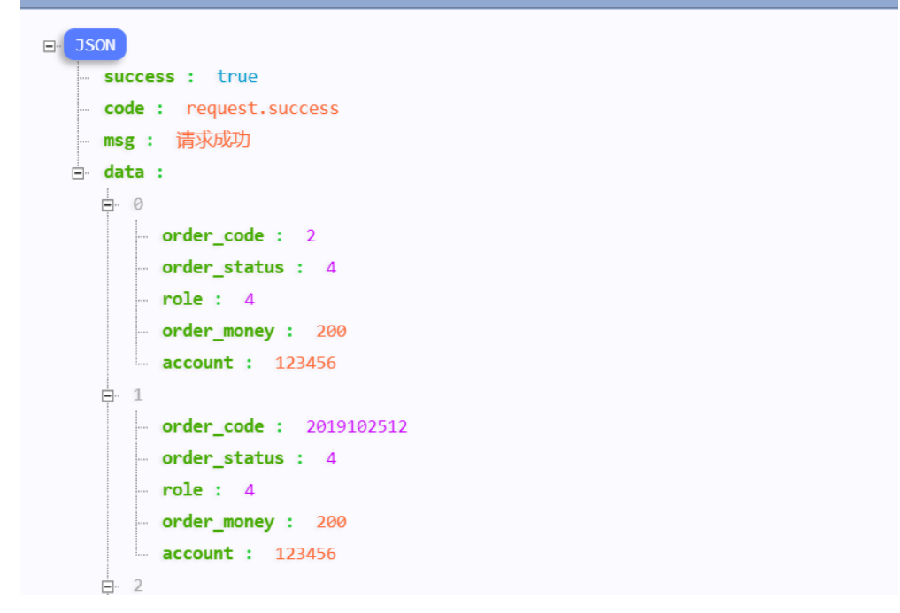
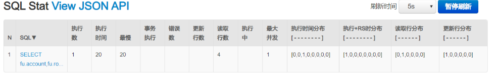
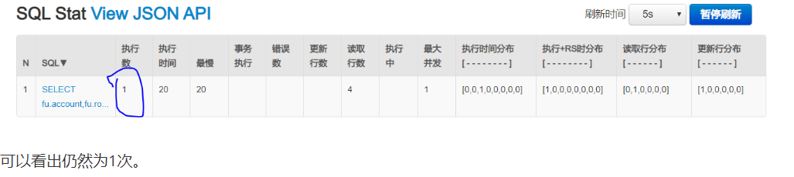
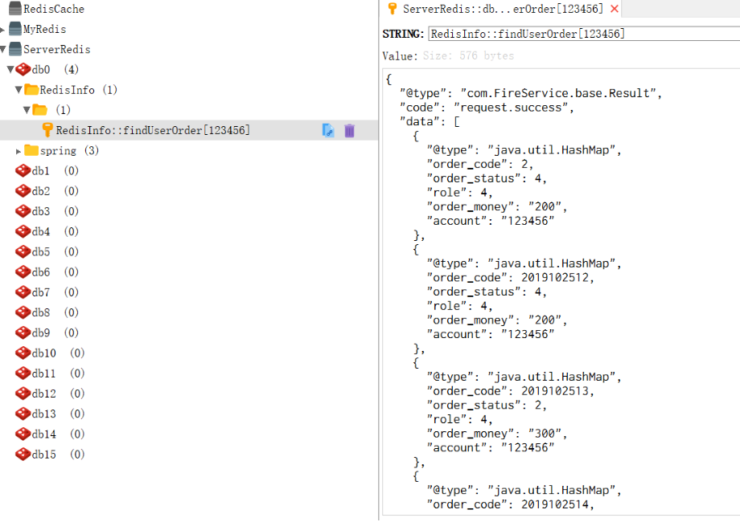

<dependency>
<groupId>org.springframework.boot</groupId>
<artifactId>spring-boot-starter-data-redis</artifactId>
</dependency>
<dependency>
<groupId>com.alibaba</groupId>
<artifactId>fastjson</artifactId>
<version>1.2.62</version>
</dependency># Redis数据库索引（默认为0）
spring.redis.database=0
# Redis服务器地址
spring.redis.host=localhost
# Redis服务器连接端口
spring.redis.port=6379
# Redis服务器连接密码（默认为空）
spring.redis.password=123456
# 连接池最大连接数（使用负值表示没有限制）
spring.redis.pool.max-active=200
# 连接池最大阻塞等待时间（使用负值表示没有限制）
spring.redis.pool.max-wait=-1
# 连接池中的最大空闲连接
spring.redis.pool.max-idle=10
# 连接池中的最小空闲连接
spring.redis.pool.min-idle=0
# 连接超时时间（毫秒）
spring.redis.timeout=1000ms@Configuration
@ConditionalOnClass(RedisOperations.class) //系统中有RedisOperations类时
@EnableConfigurationProperties(RedisProperties.class) //启动RedisProperties这个类
@EnableCaching
public class RedisConfig extends CachingConfigurerSupport {
@Autowired
RedisTemplate redisTemplate;
// 配置缓存管理器
@Bean
public RedisCacheManager cacheManager(RedisConnectionFactory connectionFactory) {
LettuceConnectionFactory jedisConnectionFactory = (LettuceConnectionFactory) redisTemplate.getConnectionFactory();
jedisConnectionFactory.setDatabase(2); //指定dbindex
redisTemplate.setConnectionFactory(jedisConnectionFactory);
jedisConnectionFactory.resetConnection();
RedisCacheConfiguration config = RedisCacheConfiguration.defaultCacheConfig()
.entryTtl(Duration.ofSeconds(60*20)) // 20分钟缓存失效
// 设置key的序列化方式
// .entryTtl(Duration.ofSeconds(10))
.serializeKeysWith(RedisSerializationContext.SerializationPair.fromSerializer(new StringRedisSerializer()))
// 设置value的序列化方式
.serializeValuesWith(RedisSerializationContext.SerializationPair.fromSerializer(new FastJsonRedisSerializer(Object.class)))
// 不缓存null值
.disableCachingNullValues();
RedisCacheManager redisCacheManager = RedisCacheManager.builder(connectionFactory)
.cacheDefaults(config)
.transactionAware()
.build();
return redisCacheManager;
}
}package com.FireService.config;
import java.nio.charset.Charset;
import org.springframework.data.redis.serializer.RedisSerializer;
import org.springframework.data.redis.serializer.SerializationException;
import com.alibaba.fastjson.JSON;
import com.alibaba.fastjson.parser.ParserConfig;
import com.alibaba.fastjson.serializer.SerializerFeature;
public class FastJsonRedisSerializer<T> implements RedisSerializer<T> {
public static final Charset DEFAULT_CHARSET = Charset.forName("UTF-8");
private Class<T> clazz;
static {
ParserConfig.getGlobalInstance().addAccept("com.FireService");
}
public FastJsonRedisSerializer(Class<T> clazz) {
super();
this.clazz = clazz;
}
@Override
public byte[] serialize(T t) throws SerializationException {
if (null == t) {
return new byte[0];
}
return JSON.toJSONString(t, SerializerFeature.WriteClassName).getBytes(DEFAULT_CHARSET);
}
@Override
public T deserialize(byte[] bytes) throws SerializationException {
if (null == bytes || bytes.length <= 0) {
return null;
}
String str = new String(bytes, DEFAULT_CHARSET);
return (T) JSON.parseObject(str, clazz);
}
}可选属性：
cacheNames/value：指定缓存组件的名字；
key：缓存数据使用的key，可以用来指定。默认即使用方法参数的值
keyGenerator：key的生成器，可以自己指定key的生成器的组件id
//自定义配置类配置keyGenerator
@Configuration
public class MyCacheConfig {
@Bean("myKeyGenerator")
public KeyGenerator keyGenerator(){
return new KeyGenerator() {
@Override
public Object generate(Object target, Method method, Object... params) {
return method.getName()+"["+ Arrays.asList(params).toString() +"]";
}
};
}
}
condition：指定符合条件的情况下才缓存；如condition="#id>0"
unless:否定缓存，当unless指定的条件为true，方法的返回值不会被缓存，可以获取到结果进行判断;如unless="#result==null";
sync：是否使用异步模式
例如：
@Cacheable(value = "RedisInfo", key = "#root.methodName+'['+#account+']'")
@ResponseBody
@RequestMapping("/RedisTest")
public Result findUserOrder(String account) throws Exception{
if(account!=null) {
List<Map<String, Object>> list=orderFindGoods.findUserOrder(account);
return Results.successWithData(list, BaseEnums.SUCCESS.code(), BaseEnums.SUCCESS.desc());
}else {
return Results.failure();
}
}
1.第一次访问

查看Druid连接信息

可以看出当前执行sql语句为一次
再一次刷新页面

此时使用RedisDestopManager查看数据

成功！！
既调用方法，又更新缓存数据，可达到同步更新缓存；
修改了数据库的某个数据，同时更新缓存
运行时机：
1、先调用运行方法；
2、将目标方法的结果缓存起来
value：缓存名 key：缓存的key其中#result表示方法返回的结果（确保更新的key和查询一致即可做到同时更新数据库数据和缓存中的数据）
@CachePut(value="user",key = "#result.id")
public User updateUser(User user){
System.out.println("updateUser:"+user);
userMapper.updateUser(user);
return user;
}缓存清除：目的是为了删除一个数据并删掉缓存
key：指定要清除的数据（对应上key可实现目的即同时做到删除数据库和缓存中的数据）
allEntries =true：指定清楚这个缓存中所有的数据
beforeInvocation = false：缓存的清楚是否在方法之前执行，默认代表是在方法之后执行
@CacheEvict(value = "user",key = "#id")
public void deleteUser(Integer id){
System.out.println("deleteUser:"+id);
userMapper.deleteUserById(id);
}具体代码我就不写了。大家可以自己尝试一下！